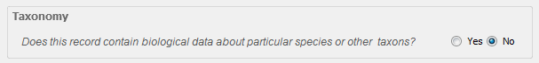
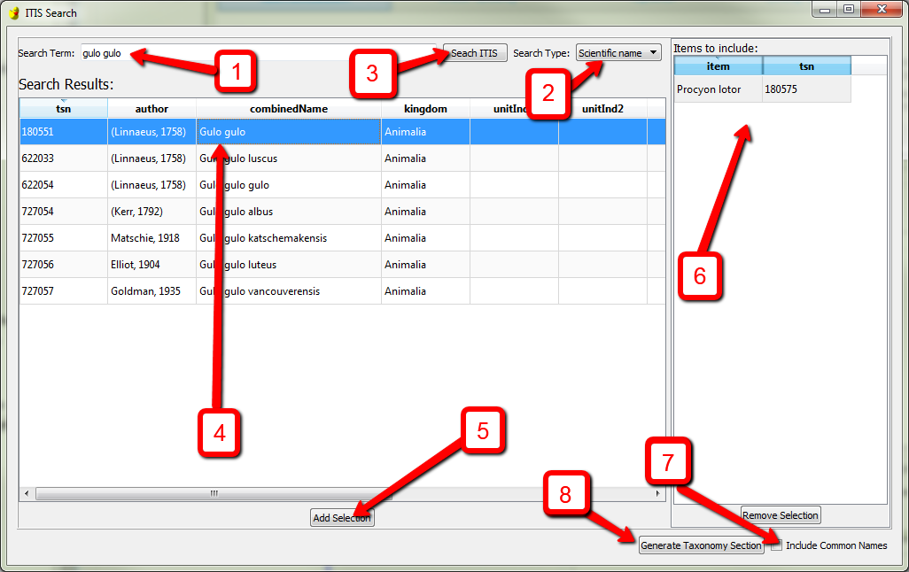

Generating a Taxonomic Information Section
In an FGDC record, the Taxonomy section is used to record information about the species (or other nomenclatural level) represented in the data.
Enabling the Taxonomy Section
The taxonomy section is not available within the Metadata Wizard unless ‘FGDC Biological Data Profile of the CDGSM’ is selected in the Metadata Standard Name, located on the Metadata Reference tab.

Using the Taxonomy Section Builder
It is suggested that users auto-generate Taxonomy Sections using the built in tool which pulls data from web services hosted by the Integrated Taxonomic Information System (ITIS) (note that this tool requires internet access).
To launch the Taxonomy builder, click the button Add Items from ITIS
A form for searching and selecting taxonomic items to include in the record will open: |

Start by entering a scientific or common name into the Search Term box. The term used can be from any level of the scientific hierarchy (order, family, species, sub-species, etc.).
Make sure that for Search Type either Scientific Name or Common Name matches the search term used.
Click Search ITIS to get a list of search results which will be displayed in the Search Results section.
Select one or more items from the Search Results list.
Click Add Selection to add the selected item to the list of taxonomic items that will be included (displayed on the right panel of the window).
Steps 1-5 can be run as many times as needed to complete the list of items to include. If any item needs to be removed from this list, select the item and click the Remove Selection button below.
If common names should be included in the taxonomy section, check this box.
Click the Generate Taxonomy Section button to create a taxonomy section based on the list in the Items to include: box above.
Limitations
Be aware that currently the Taxonomy section in the Metadata Wizard does not contain the Taxonomic System section of the standard, nor is the tool intended for creating a Taxonomy section manually, without using the Taxonomy Builder tool.